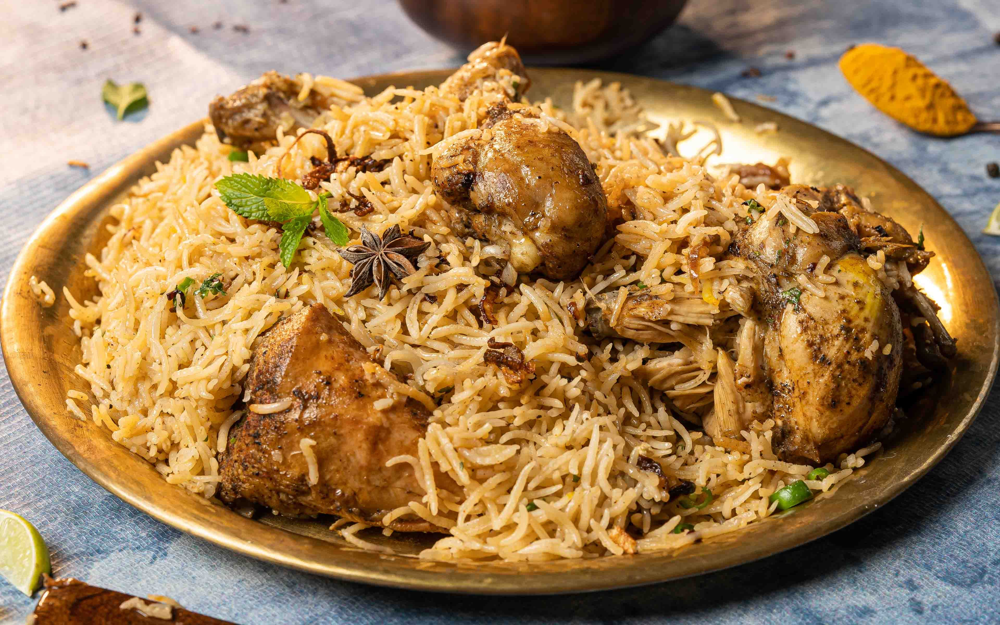

Chicken Biryani

Description
Chicken Biryani is a mixed rice dish traditionally made with spiced meat.
It was present in Mughal-era India, through whether it was created there is debated. It is thought to derive from a Persian rich dish, either "pilau" or "birinj biryan".
The dish makes use of slow-cooking as in Persian pilau, combined with Persian-style yoghurt-marinated meat and a spicy Indian style of cooking; it was likely developed in the Mughal court kitchens.
It was most popular dishes in South Asia and among the South Asian diaspora.
Ingredients
- 2 cups basmati rice
- 500g chicken
- 2 onions
- 2 tomatoes
- 1 cup yoghurt
- Ginger garlic paste
- Turmeric powder
- Chilli powder
- Biryani masala
- Fresh coriander leaves
- Mint leaves
- Salt and oil
Steps
- Wash and soak the basmati rice for 20 minutes.
- Marinate the chicken with yoghurt, spices, ginger garlic paste and salt.
- Heat oil in a pan and fry the sliced onions.
- Add tomatoes and marinated chicken.
Cook until the chicken is partially cooked.
- Boil the rice separately until it is about
70 percent cooked.
- Layer the rice over the chicken mixture.
- Cover and cook on low heat until the rice
and chicken are fully cooked.
- Garnish with coriander and mint leaves.
Serve hot.
Home